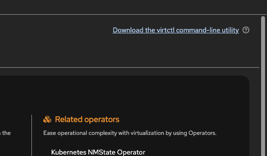

virtctl を使用した VM 管理
概要
virtctl CLI ツールは、OpenShift Virtualization で仮想マシン（VM）を管理するためのコマンドを提供します。本ガイドでは、基本的な VM 操作について説明します。
検証済みバージョン:
OpenShift 4.20
virtctl のダウンロードとインストール
virtctl CLI ツールは、OpenShift Web コンソールから直接ダウンロードできます。
-
OpenShift Web コンソールで、左サイドバーの Virtualization → Overview に移動します。
 Figure 1. OpenShift コンソールでの Virtualization Overview
Figure 1. OpenShift コンソールでの Virtualization Overview -
Overview ページの右上隅にある Download the virtctl command-line utility リンクをクリックします。

Figure 2. virtctl のダウンロードリンク -
ダウンロードページで、お使いのオペレーティングシステムおよびアーキテクチャに適した
virtctlバイナリを選択します。 Figure 3. 利用可能な virtctl バイナリ
Figure 3. 利用可能な virtctl バイナリ -
ダウンロード後、バイナリに実行権限を付与し、PATH に移動します。
# Linux/Mac chmod +x virtctl sudo mv virtctl /usr/local/bin/ # Verify installation virtctl versionWindows の場合は、実行ファイルを展開し、その場所をシステム PATH に追加してください。
基本的なコマンド
VM の一覧表示
VM を管理する前に、oc コマンドを使用してクラスター内で利用可能な VM を確認します。
# List all VMs in a specific namespace
oc get vm -n myapp
# List all VMs across all namespaces
oc get vm -A出力例:
NAMESPACE NAME AGE STATUS READY
myapp fedora-app-vm 13d Running TrueIP アドレスやノード配置などの詳細情報を含む、実行中の VM インスタンス（VMI）を表示するには以下を実行します。
oc get vmi -A出力例:
NAMESPACE NAME AGE PHASE IP NODENAME READY
myapp fedora-app-vm 13d Running 10.128.1.225 ocplab01 True
VM の一覧表示やクエリには oc を使用してください。VM の起動、停止、コンソールアクセスなどの操作には virtctl を使用します。
|
VM のライフサイクル
VM の起動、停止、再起動を行います。
# Start a VM
virtctl start fedora-app-vm -n myapp
# Stop a VM
virtctl stop fedora-app-vm -n myapp
# Restart a VM
virtctl restart fedora-app-vm -n myappVM へのアクセス
VM に接続します。
# Console access (press Ctrl+] to exit)
virtctl console fedora-app-vm -n myapp
# SSH access (requires SSH configured)
virtctl ssh user@fedora-app-vm -n myapp
# VNC access
virtctl vnc fedora-app-vm -n myappVM 情報の取得
VM の詳細を取得します（VM に QEMU guest agent がインストールされている必要があります）。
# Guest OS information
virtctl guestosinfo fedora-app-vm -n myapp出力例:
{
"guestAgentVersion": "10.1.0",
"hostname": "fedora-app-vm",
"os": {
"name": "Fedora Linux",
"kernelRelease": "6.5.6-300.fc39.x86_64",
"version": "39",
"prettyName": "Fedora Linux 39 (Cloud Edition)",
"versionId": "39",
"kernelVersion": "#1 SMP PREEMPT_DYNAMIC",
"machine": "x86_64",
"id": "fedora"
}
}# List filesystems
virtctl fslist fedora-app-vm -n myapp出力例（マウントされたファイルシステムと使用状況を表示）:
{
"items": [
{
"diskName": "vda2",
"mountPoint": "/boot/efi",
"fileSystemType": "vfat",
"usedBytes": 21723136,
"totalBytes": 104607744
},
{
"diskName": "vda3",
"mountPoint": "/boot",
"fileSystemType": "ext4",
"usedBytes": 91316224,
"totalBytes": 1902895104
},
{
"diskName": "vda4",
"mountPoint": "/",
"fileSystemType": "btrfs",
"usedBytes": 687783936,
"totalBytes": 29525868544
}
]
}# List logged-in users
virtctl userlist fedora-app-vm -n myappファイル転送
virtctl scp を使用して VM との間でファイルをコピーします。これには VM で SSH が実行されている必要があり、以下のいずれかの認証方法が必要です。
-
SSH キー（推奨）: 公開鍵が VM の
~/.ssh/authorized_keysに存在すること -
パスワード: VM の SSH でパスワード認証が有効になっていること
# Copy to VM (uses default SSH key)
virtctl scp local-file.txt fedora@fedora-app-vm:/tmp/remote.txt -n myapp
# Copy from VM
virtctl scp fedora@fedora-app-vm:/tmp/remote.txt ./local.txt -n myapp
# Specify a different SSH key
virtctl scp -i ~/.ssh/my_key local-file.txt fedora@fedora-app-vm:/tmp/ -n myapp
SSH が設定されていない場合は、まず virtctl console を使用して VM にアクセスし、SSH キーを設定してください。
|
VM 作成時に SSH キーを注入するには、cloud-init 設定に含めます。
#cloud-config
user: fedora
ssh_authorized_keys:
- ssh-rsa AAAAB3NzaC... your-key-here詳細な SSH 設定オプションについては、Linux仮想マシンへのリモートアクセス を参照してください。
VM 操作の検証
VM を起動または停止した後は、操作を確認します。
# Check VM status
oc get vm fedora-app-vm -n myapp起動成功後の出力例:
NAME AGE STATUS READY
fedora-app-vm 7d3h Running True# Check VMI (running instance)
oc get vmi fedora-app-vm -n myapp期待される結果: 実行中の場合は VMI が一覧に表示され、停止後は VMI は表示されません。
クイックリファレンス
各アクセス方法の用途:
-
virtctl console- テキストのみのターミナルアクセス。ネットワークなしでも動作 -
virtctl ssh- キー設定済みの場合の便利な SSH アクセス -
virtctl vnc- GUI ベースの VM 用のグラフィカルデスクトップアクセス
VM 情報の確認が必要な場面:
-
virtctl guestosinfo- 更新前に OS バージョンを確認する -
virtctl fslist- ソフトウェアインストール前にディスク空き容量を確認する -
virtctl userlist- 現在誰がログインしているか確認する
よくある問題
問題: サーバーに接続できない
解決策: クラスターへのアクセスを確認してください:
oc whoami
oc get nodes問題: ゲストエージェントコマンドがデータを返さない
解決策: VM に QEMU guest agent をインストールしてください。インストール手順については、Installing the QEMU guest agent を参照してください。
問題: SSH/SCP コマンドが失敗する
解決策: VM で SSH が設定されているか確認してください。コンソールを使用して確認します:
# Access via console first
virtctl console fedora-app-vm -n myapp
# Inside VM, check SSH status
systemctl status sshd問題: コンソールがフリーズまたは反応しない
解決策: Ctrl+] で終了し、VM ステータスを確認してください:
oc get vmi fedora-app-vm -n myappベストプラクティス
-
混乱を避けるため、
-nで常に名前空間を指定する -
最初のセットアップにはコンソールを使用し、定期的なアクセスには SSH を使用する
-
すべての VM にフル機能を利用するためのゲストエージェントをインストールする
-
VM ステータスには
ocを、VM 操作にはvirtctlを使用する -
セッションのフリーズを防ぐため、
Ctrl+]でコンソールを適切に終了する -
外部アクセスを設定する前に、
virtctl sshでテストを行う
まとめ
このチュートリアルでは、以下の内容を学習しました。
-
OpenShift Web コンソールから
virtctlCLI ツールをダウンロード、インストール、設定する方法 -
起動、停止、再起動を含む VM ライフサイクル操作を管理する方法
-
コンソール、SSH、VNC メソッドを使用して VM にアクセスする方法
-
QEMU guest agent を介してゲスト OS 情報、ファイルシステム詳細、ユーザーリストを取得する方法
-
virtctl scpを使用して VM との間でファイルを転送する方法
参照
-
Linux仮想マシンへのリモートアクセス - すべての VM アクセス方法